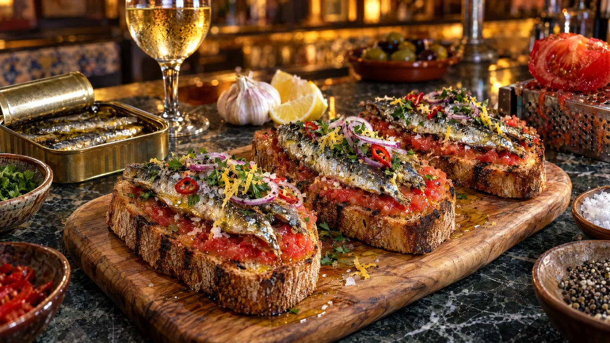

RESTFEST · RECEPTFörrätt · Smörgås · Mingelmat & tilltugg
Pan con tomate med sardiner, citron och chili
En burk sardiner i olivolja, två tomater och gårdagens bröd. Brödet rostas krispigt, gnids med vitlök och riven tomat och toppas med glänsande sardiner, citronskal, chili och persilja. Spansk tapas från en bar i Barcelona, gjord på det billigaste i fiskhyllan.
- Förberedelse
- 10 min
- Tillagning
- 5 min
- Portioner
- 4 som förrätt eller 2 som lunch
- Nivå
- Nybörjare
 Det här behöver du
Det här behöver du
JÄMFÖRT MED DIN KYL
Tryck på + vid det du behöver köpa.
Tomatbröd
Topping
Gör så här
- Ringla olivolja över brödskivorna och rosta dem i en het, torr stekpanna eller grillpanna, ca 2 minuter per sida, tills de är krispiga med mörka ränder.
- Dela vitlöksklyftan och gnid snittytan över det varma brödet. Den krispiga ytan fungerar som ett rivjärn.
- Dela tomaterna och riv snittytan mot rivjärnets grova sida tills bara skalet är kvar. Salta tomatmoset.
- Bred tomatmoset över brödet ända ut i kanterna.
- Lyft upp sardinerna ur burken och låt oljan droppa av. Dela stora sardiner på längden och ta bort ryggbenet om du vill. Lägg 2–3 sardiner på varje brödskiva.
- Ringla lite av oljan från burken över.
Dekoration och servering
- Strö över citronskal, chili, persilja och rödlök.
- Avsluta med flingsalt och nymald svartpeppar.
- Servera på ett träbräde med citronklyftor, gärna till ett glas kallt vitt vin.
- Skär varje skiva i tre bitar om du serverar dem som mingelmat.
- Utan sardiner blir tomatbrödet en vegansk tapas i sig självt.
Mått och ugnstemperaturer
Måtten är svenska (dl, msk, tsk, krm). Ugnstemperaturerna gäller vanlig ugn med över- och undervärme; med varmluft, sänk med 20 grader.